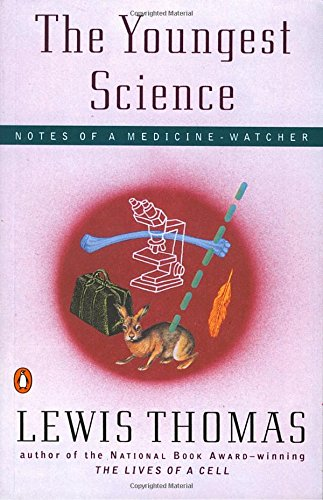
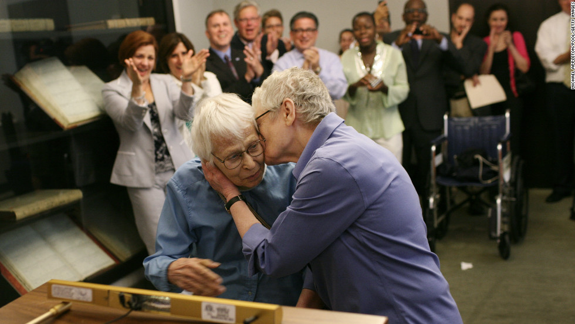
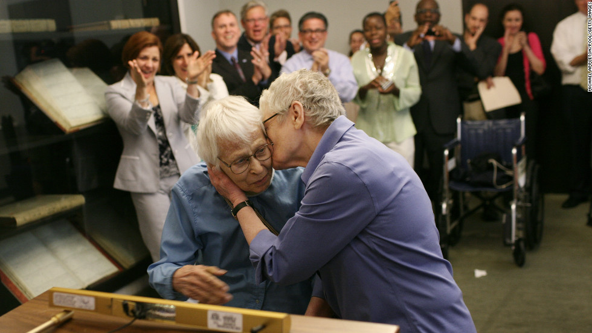
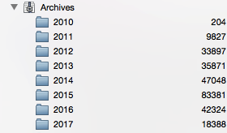
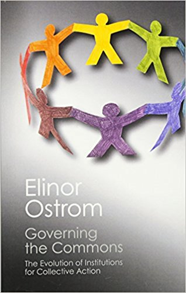
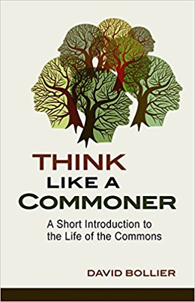
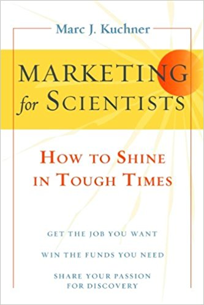
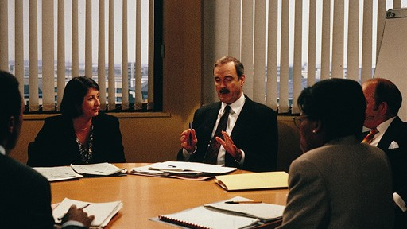

To Do:
2018-12-17: write Carpentry talk.
2018-01-04: start writing talk.
2018-02-20: write! the! talk!




 




"Where's he going with all of this?"
"I don't know. I hope he shows us
another picture of a kitten soon."


"Faculty cannot change the system unless they first survive it."
— Richard Tapia
"If you wish to make
an apple pie from scratch,
you must first invent the universe."
— Carl Sagan







